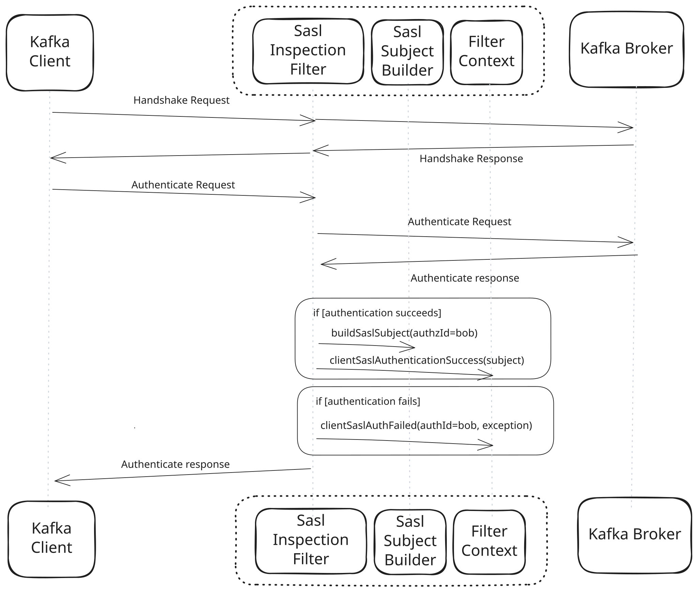

This guide covers using the Kroxylicious SASL Inspection Filter. This filter extracts the authenticated principal from a successful SASL exchange between Kafka Client and Kafka Broker and makes it available to the other filters in the chain.
Refer to other Kroxylicious guides for information on running the proxy or for advanced topics such as plugin development.
This filter inspects the SASL exchange between Kafka Client and Broker and extracts the authorization ID. If the client’s authentication with the broker is successful, the filter uses the SASL subject builder to construct an authenticated subject. The subject is made available to the other filters in the chain, so that they may know on whose behalf they are acting.
| The SASL Inspection Filter plays no part in deciding if the authentication is successful or not. That role remains the exclusive responsibility of the broker. |
To use this filter, the Kafka Cluster’s listener must be configured to authenticate using SASL, and it must use a SASL mechanism that is enabled by this filter. If the Kafka Client is configured to use a SASL mechanism that is not supported by the proxy, or the proxy and Kafka Cluster do not have the same mechanism available, the client will be disconnected with an unsupported SASL mechanism error.
This filter supports the following SASL mechanisms:
| SASL mechanism | Enabled by default |
|---|---|
|
No |
|
|
Yes |
|
|
Yes |
|
|
Yes |
Mechanisms that transmit credentials in plain text are disabled by default. This is done to avoid the plain-text passwords existing in the proxy’s memory. To use such a mechanism, you must enable it in the filter’s configuration.
For the OAUTHBEARER inspection, only JWT tokens that use signatures (JWS) are supported. JWT tokens that use encryption (JWE) are not supported. Unsigned JWT tokens are supported but not recommended for production use.
If an attempt is made to use an unsupported token type, the authentication will fail with a SASL error.

This procedure describes how to set up the SASL Inspection filter by configuring it in Kroxylicious.
An instance of Kroxylicious. For information on deploying Kroxylicious, see the Kroxylicious Proxy guide or Kroxylicious Operator for Kubernetes guide.
Configure a SaslInspection type filter.
In a standalone proxy deployment. See Example proxy configuration file
In a Kubernetes deployment using a KafkaProtocolFilter resource. See Example KafkaProtocolFilter resource
If your instance of the Kroxylicious Proxy runs directly on an operating system, provide the filter configuration in the filterDefinitions list of your proxy configuration.
Here’s a complete example of a filterDefinitions entry configured for SASL inspection:
filterDefinitions:
- name: my-sasl-inspection-filter
type: SaslInspection
config:
enabledMechanisms: [ "OAUTHBEARER" ]
requireAuthentication: true
subjectBuilder: <class name>
subjectBuilderConfig: <object providing configuration for the subject builder>where:
enabledMechanisms restricts the filter to the given SASL mechanism(s). Refer to SASL mechanism by its name given in the supported mechanisms table. If omitted, the SASL mechanisms SCRAM-SHA-256, SCRAM-SHA-512 and OAUTHBEARER will be enabled by default.
if requireAuthentication is true, a successful authentication is required before the filter forwards any requests other than those strictly required to perform SASL authentication. If false then the filter will forward all requests regardless of whether SASL authentication has been attempted or was successful. Defaults to false.
subjectBuilder is the name of a plugin class implementing io.kroxylicious.proxy.authentication.SaslSubjectBuilderService. If omitted, a default subject builder creates a principal with name matching the SASL authorized ID.
subjectBuilderConfig provides subject builder configuration.
Refer to the Kroxylicious Proxy guide for more information about configuring the proxy.
KafkaProtocolFilter resourceIf your instance of Kroxylicious runs on Kubernetes, you must use a KafkaProtocolFilter resource to contain the filter configuration.
Here’s a complete example of a KafkaProtocolFilter resource configured for SASL inspection:
kind: KafkaProtocolFilter
metadata:
name: my-sasl-inspection-filter
spec:
type: SaslInspection
configTemplate:
enabledMechanisms: [ "OAUTHBEARER" ]
requireAuthentication: true
subjectBuilder: <class name>
subjectBuilderConfig: <object providing configuration for the subject builder>where:
enabledMechanisms restricts the filter to the given SASL mechanism(s). Refer to SASL mechanism by its name given in the supported mechanisms table. If omitted, the SASL mechanisms SCRAM-SHA-256, SCRAM-SHA-512 and OAUTHBEARER will be enabled by default.
if requireAuthentication is true, a successful authentication is required before the filter forwards any requests other than those strictly required to perform SASL authentication. If false then the filter will forward all requests regardless of whether SASL authentication has been attempted or was successful. Defaults to false.
subjectBuilder is the name of a plugin class implementing io.kroxylicious.proxy.authentication.SaslSubjectBuilderService. If omitted, a default subject builder creates a principal with name matching the SASL authorized ID.
subjectBuilderConfig provides subject builder configuration.
Refer to the Kroxylicious Operator for Kubernetes guide for more information about configuration on Kubernetes.
By default, the SASL Inspection filter creates an authenticated subject with a principal that contains the SASL authorized ID. You can change this behavior by providing an alternative subject builder configuration.
The following example shows configuration for the SASL subject builder:
# ...
subjectBuilder: DefaultSaslSubjectBuilderService
subjectBuilderConfig:
addPrincipals:
- from: <field name>
map:
- replaceMatch: <match replace flags 1>
- # ...
- replaceMatch: <match replace flags n>
- else: identity|anonymous
principalFactory: <principal factory>where:
<field name> identifies the field to extract. Valid field names are listed in the Supported fields table.
<match replace flags 1>…<match replace flags n> define a set of replacement matchers used to match and transform the field value.
else defines the behavior when none of the replacement matchers match the field value. identity generates a principal based on the original (unmapped) field value. anonymous generates an anonymous principal.
<principal factory> the name of a PrincipalFactory implementation. Currently, only UserFactory is supported.
Field values are tested against the replacement matchers in the order they are configured. The first matcher that matches the field value generates the principal. After a successful match, remaining matchers for that field are ignored.
If no matcher matches, the outcome is defined by the else clause. If there is no match and no else cause is provided, no principal is generated for this field.
| Currently, the subject builder is restricted to producing a subject containing at most one user principal. |
| Field name | Description |
|---|---|
|
saslAuthorizedId |
The SASL authorized ID returned by the SASL authentication exchange. |
Replacement matchers control how field values are matched and transformed. A replacement matcher is defined using this format:
/<matching regular expression>/<replacement>/<flags>where:
<matching regular expression> is the regular expression used to test the field value.
<replacement> defines the replacement value to use when the regular expression is matched. The replacement can use back references ($1 etc) to refer to capturing groups defined within the regular expression.
<flags> (optional) can be either L or U for lower or upper-casing respectively. The case transformation is applied to the replacement value after any back reference resolution.
Apache Kafka is a registered trademark of The Apache Software Foundation.
Kubernetes is a registered trademark of The Linux Foundation.
Prometheus is a registered trademark of The Linux Foundation.
Strimzi is a trademark of The Linux Foundation.
Hashicorp Vault is a registered trademark of HashiCorp, Inc.
AWS Key Management Service is a trademark of Amazon.com, Inc. or its affiliates.
Microsoft, Azure, and Microsoft Entra are trademarks of the Microsoft group of companies.
Fortanix and Data Security Manager are trademarks of Fortanix, Inc.
Glossary of terms used in the SASL Inspection guide.
JSON Web Encryption is an IETF standard for exchanging encrypted data using JSON.
JSON Web Token is an IETF standard for securely transmitting information between parties as a JSON object.
JSON Web Signature is an IETF-proposed standard for signing arbitrary data.
A principal is a component of a subject.
Simple Authentication and Security Layer is an IETF framework for handling authentication.
A subject is the authenticated identity of a client.